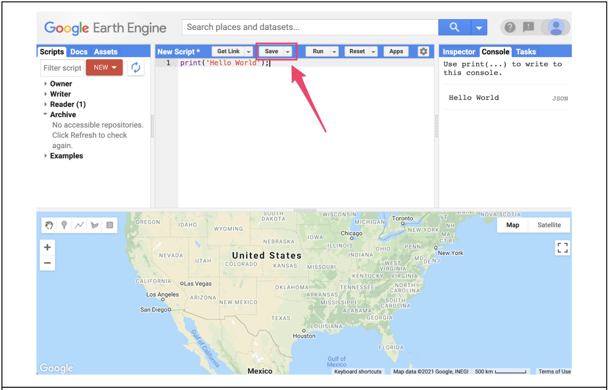
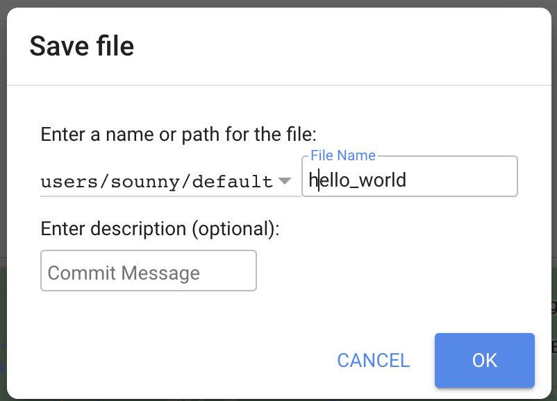
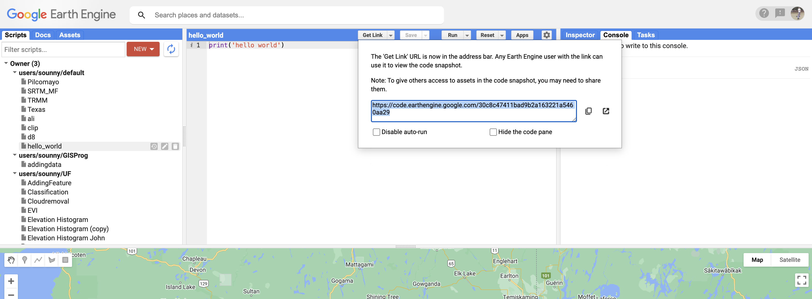

What You'll Learn
- Create and access your Google Earth Engine account
- Navigate the Code Editor interface and understand its components
- Write and run your first JavaScript program
- Save scripts to your cloud repository
- Share code via URL links for submission
Why This Matters
Google Earth Engine provides access to over 40+ years of satellite imagery and the computational power of Google's cloud infrastructure. Scientists use GEE to:
- Monitor deforestation in the Amazon in near real-time
- Track urban expansion across entire continents
- Analyze crop health to improve food security
- Map flood extent during natural disasters for emergency response
This first lab establishes the foundation for all future work in the course.
Before You Start
- Prerequisites: Complete the Week 0 orientation materials and request access to Google Earth Engine with your institutional Google account.
- Estimated time: 45 minutes
- Materials: Google account credentials, access to your email for signup confirmation, and a notes document to record setup details.
Key Terms
- Code Editor
- The web-based IDE (Integrated Development Environment) where you write, run, and debug GEE scripts.
- Console
- The output panel where print() statements display their results and where errors appear.
- Repository
- A cloud-based folder that stores your scripts, similar to a folder on Google Drive.
- Script
- A file containing JavaScript code that Earth Engine can execute.
Introduction
In this course, we will use Earth Engine, and you will need to develop skills in both remote sensing and programming. The language of this course is JavaScript,a widely-used programming language that runs directly in your web browser.
Don't worry if you've never programmed before! We'll start with the basics and build up your skills gradually. By the end of this lab, you'll have written your first program.
Lab Instructions
-
Step 1 - Sign Up for an Earth Engine Account
Go to https://earthengine.google.com/
Take a few minutes to explore the website and understand what Earth Engine offers.
Click the Sign-Up page and fill out the form: https://signup.earthengine.google.com/
Signup is typically approved within a few minutes to a few hours.
Try It
While waiting for approval, explore the Case Studies page to see real-world applications of Earth Engine.
-
Step 2 - Access the Earth Engine Code Editor
Once your account is approved, go to https://code.earthengine.google.com/
The Code Editor is an integrated Earth Engine JavaScript API development environment. It offers an easy way to type, debug, run, and manage code.

The Google Earth Engine Code Editor Interface Take a moment to identify the main components of the interface:
- Left Panel: Scripts (your saved code), Docs (API documentation), Assets (your data)
- Center Panel: Code editor where you write JavaScript
- Right Panel: Inspector (examine map), Console (view output), Tasks (exports)
- Bottom Panel: Interactive map for visualizing results
-
Step 3 - Writing Your First Code
When learning a new language and programming environment, it is customary to create a program that displays the words "Hello World." This tradition dates back to the 1970s and helps verify that your environment is working correctly.
Type the following code into line one of your script:
print('Hello World');Understanding the code:
print- A built-in function that displays output to the Console( )- Parentheses contain what you want to print'Hello World'- The text (string) to display, wrapped in quotes;- Semicolon marks the end of the statement
Click the Run button. The output will appear in the Console tab on the upper right panel.

Hello World output in the Console Expected Output
Hello World -
Step 4 - Save Your Code
Now let's save your script so you can access it later. Click the Save button.

The Save button in the Code Editor If this is your first time using the Code Editor, you'll be prompted to create a home folder. This is your cloud storage location for all your code. Choose a name carefully, it cannot be changed later. A good choice is your Google Account username.
Next, create a new repository (like a project folder). Repositories help you organize your code by topic or course. Name it "default" or "GEE_Course" to get started.
Finally, save your script with the name "hello_world" and click OK.

Saving your first script Your script now appears in the script manager panel on the left. Scripts are saved in the cloud and accessible from any computer.
-
Step 5 - Share Your Code
Click on the Get Link button to generate a shareable URL for your code.

The Get Link button allows you to share your code This URL contains your complete code and can be opened by anyone with a GEE account. This is how you will submit all future labs.
Check Your Understanding
- Where do you see the output when you run
print('Hello World');? - What are the three main panels in the Code Editor interface?
- Why do we need to put text inside quotes when using
print()? - What happens if you forget the semicolon at the end of your statement?
Answers: 1) Console tab (right panel), 2) Scripts/Docs/Assets (left), Code (center), Inspector/Console/Tasks (right), 3) Quotes indicate a text string vs. a variable or function, 4) GEE is forgiving,it often works, but it's best practice to include them.
Troubleshooting
Solution: This indicates an error. Check for typos,JavaScript is case-sensitive!
Make sure print is lowercase and that quotes match (both single or both double).
Solution: Make sure you're logged into your Google account and that your Earth Engine access has been approved. Check that your code has been saved first.
Solution: You must save your script first before the Get Link button becomes active. It's located in the toolbar area above the code editor.
Key Takeaways
print()displays output in the Console panel- Text strings must be wrapped in single quotes
' 'or double quotes" " - Scripts are saved in the cloud and can be accessed from anywhere
- Use "Get Link" to create shareable URLs for code submission
- The Code Editor has three main areas: Scripts (left), Code (center), and Console (right)
Pro Tips
- You can also print numbers: try
print(42);,no quotes needed for numbers! - Use
Ctrl + Enter(Windows) orCmd + Enter(Mac) to run scripts quickly - Click the "Docs" tab to search the API documentation whenever you're unsure about a function
- Organize your scripts into repositories by topic (e.g., "Lab_Assignments", "Practice", "Projects")
?? Lab Submission
Submit the URL of your GEE script via email.
Subject: Lab 1 - Getting Started - [Your Name]
Include in your email:
- The shareable link to your "Hello World" script in Google Earth Engine
- A screenshot of your Console output showing "Hello World"
- Any questions or challenges you encountered
Next Steps
Congratulations on completing your first Earth Engine lab! You've taken the first step toward becoming proficient in cloud-based remote sensing analysis.
In the next lab, we'll explore how to load and visualize Landsat satellite imagery,you'll see Earth from space within your first few lines of code!